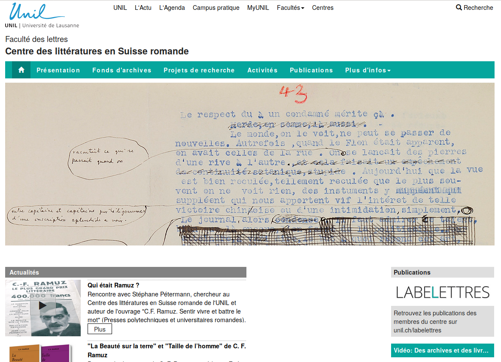

Disseminate your
research online
EnExDi2020, Poitiers, 10-14 February
Elena Spadini (Université de Lausanne, ABC-DH)
1. Components of a digital project
2. Client-server model
- Browser. Software used to open webpages, for example: Firefox, Chrome, Safari, Opera, Edge, etc.
- URL. Uniform Resource Locator, address. It allows to locate a resource in the web, for example: https://enexdi.sciencesconf.org.
URL
https://www.unil.ch/clsr/home.html
protocol domain path

3. Sites web e
HTML (HyperText Markup Language)
Sources :
- Alexandre Niveau, HTML : la base du web, CC BY-NC-SA 4.0
- w3schools.com, HTML5 Tutorial
Prologue and root
HTML5 : DOCTYPE and root
<!DOCTYPE html>
<html lang="it">
Element head
<head>
<title>My website<title>
<meta charset="UTF-8" />
<meta name="keywords" content="course, HTML" />
<link rel="stylesheet" media="screen" href="myStyles.css" />
</head>
- the title of the page
- the declaration of the character encoding
- other juridical and descriptive metadata
- the link to the CSS stylesheets
- the link to the JavaScript scripts
The body of the document: element body
<body>
<h2>Title of a section</h2>
<p class="intro">The text of the introduction in a paragraph.</p>
<p>Text and more text. It might be useful to
<em>highlight something</em>,
but not always. </p>
</body>
White spaces in HTML
- A lot of spaces of different types (space, carriage return, tab, etc.) in a row are interpreted as only one white space
- To force a carriage return inside a paragraph, use
<br/>(break) - Attention ! It is rare that you need the tag
<br/>: the use of paragraph should be enough and produce a more elegant code.
Block e inline elements
- Block elements: structure the content. They alway start on a new line.
Titles:<h1>...</h1> , <h2>...</h2>
Paragraphs:<p>...</p>
Separators:<hr />
Lists:<ul> et <ol>, qui contiennent des items de liste <li>
Generic divisions:<div>...</div>
Block e inline elements
Inline elements : they appear inside the flux of the text.
Image:<img src="maphoto.jpg" alt="ma photo" /><a href="http://www.w3.org">hypertexte</a>the <span>text in the span</span> is thisComments
<!-- Ceci est un commentaire | Same as in XML.
This part of the code is not read by the browser.
It can be used to add explanation about the code or take notes -->
Some online resources
Exercise
- Open the folder zip 'eserciseHTML' (in
enexdi2020/materials/6_WebPublishing/exercises) - Open the file
index.htmlin oXygen - Follow the instructions in the comments at the bottom of the file. You can also add your comments wherever you want in the file.
Attention : other editors can be used instead of oXygen, as Sublime Editor, Notepad++, Wrangler, etc.
5. CSS
Fonti :
- Alexandre Niveau, Introduction à CSS, CC BY-NC-SA 4.0
- w3schools.com, CSS Tutorial
CSS (cascading style sheets)
Separation of content (HTML) and form (CSS).
CSS allows you to format, mettre en page, manage the layout, the colors colori, etc.
Attribut @style
<h1 style="color:red; font-style:italic;">Mon titre</h1>
It contains property-value,
separated by a semicolon
(here color:red e font-style:italic)
- the value of the property
colorisred - the value of the property
font-styleisitalic
Result: our title will be red and italic.
External stylesheets
<link rel="stylesheet" href="mon_style.css" />Cascade
Priority of styles :
- browser default
- external styles defined in the CSS stylesheet
- inline styles defined with the attribut @style on the HTML elements
Comments
/* This is a comment.
This part of the code is not read by the brower.
It can be used for notes and explanations */
Some CSS property
A list here. For example:
color, color of the text (ex.color: blue)background-color, color of the background (ex.background-color: black)font-family, font (ex.font-family: Verdana)font-size(ex.font-size: 120%)font-style(ex.font-style: italic)borderborders around the elements (ex.border: 1px solid black)text-align, alignment of the text (ex.text-align: center)text-decoration, decoration of the text (ex.text-decoration: underline)
Box model
The browser represents each element as a box.
- The box of the block elements (
<div>,<p>,<h1>) starts on a new line and takes all the available width.. - The box of the inline elements (
<strong>,<img>,<a>) behave as a word in the flux of the text and only takes the width of the word.
We can change the property display with CSS
Colors of the elements
- Property
color: color of the text - Property
background-color: color of the highlight
Padding vs margin
(inspect element)
Exercise
- Move the CSS file in the same folder of the HTML file 'index.html'.
- Add to 'index.html' this line at the end of the
head(in thehead, not after!)
- Open the file 'site.css' in oXygen and follow the instructions in the comment.

XSLT
Extensible Stylesheet Language TransformationsLangage qui permet de transformer un document XML (donc aussi XML/TEI) dans un autre document (XML, HTML, CSV, etc.)
Solutions "prêts-à-porter" pour la publication web de documents XML/TEI
- Feuilles de transformation dans oXygen ou OxGarage. XSLT
- TEI Boilerplate. XSLT, JavaScript, CSS
- CETEIcean. JavaScript, CSS
- TEI Publisher Toolbox. eXist database and application platform
Content Management System (CMS)
Système de gestion de contenuUn CMS gère la création et la modification de données numérique.
Un CMS Web sert à la gestion de pages web et permet de créer des sites sans maitriser les langages informatiques.
Exemples : Wordpress, Drupal, Joomla, Omeka
 Wordpress. Visual editor
Wordpress. Visual editor

Wordpress. Text editor

 Drupal. Exemples d'éditions numériques
Drupal. Exemples d'éditions numériques

|

|

|

|
 Omeka
Omeka
"open-source web publishing platforms
for sharing digital collections and
creating media-rich online exhibits"


Cuenca EL, Kowaleski M. (2018) "Omeka and Other Digital Platforms for Undergraduate Research Projects on the Middle Ages", Digital Medievalist. Vol. 11 Issue:1/3. DOI: http://doi.org/10.16995/dm.69
Rath L., (2016) "Omeka.net as a librarian-led digital humanities meeting place", New Library World, Vol. 117 Issue: 3/4, pp.158-172. DOI: https://doi.org/10.1108/NLW-09-2015-0070
Marsh A (2013) "Omeka in the classroom: The challenges of teaching material culture in a digital world", Literary and Linguistic Computing, Vol. 28 Issue: 2/1, pp.279–282. DOI: https://doi.org/10.1093/llc/fqs068
pour les données de recherche
- depôt pour le code source
- logiciel de gestion de versions
- hosting
... Github, Gitlab, SourceForge ...

GITHUB
- Développement de Zenodo : github.com/Zenodo/zenodo
- Développement de Stylo : github.com/computationalstylistics/stylo
- Site web pour la formation CAD : github.com/CADottorato/sito (source) | cadottorato.github.io/sito/ (site)
- Site web perso : github.com/elespdn/elespdn.github.io (source) | elespdn.github.io/io/ (site)
- entrepôts sécurisés
- identifiants pérennes (possibilité de citer et de gérer la proprieté intellectuelle)
- gestion des droits
... HAL, Zenodo, Nakala ...
DOI (Digital Object Identifier)
- identifiant numérique pérenne d'une ressource
- International DOI Foundation (not-for-profit, member-based, organisation initiated by several publishing trade associations), 1998
- ISO 26324, 2012-2017
- Example. DOI: 10.18716/ride.a.2.5


Exercice
- Script R (langage de programmation) pour la création d'une carte
→ Github - Report d'un projet en cours
→ HAL, Zenodo - Fichiers XML/TEI pour une édition
→ Zenodo. Exemple : Bérardier de Bataut, Essai sur le récit [DOI 10.5281/zenodo.1098439]
→ Github. Exemple : Faustedition [github.com/faustedition/faust-xml] - Données pour un catalogue d'éditions numériques
→ Github. Exemple : Catalogue Digital Editions [github.com/gfranzini/digEds_cat]
→ Zenodo. Exemple : Catalogue Digital Editions [DOI 10.5281/zenodo.1161425] - Pre-print article scientifique
→ HAL, Zenodo
open data
- verifier le resultats obtenus, potentiallement augmenter la qualité de la recherche
- reutiliser pour découvrir, à travers des études comparatives, data mining, etc.
- reduire le coûts de la collecte des données et de leur duplication
- Creative Commons website
- Open Data Commons website
- Wikipedia, Licence Creative Commons, @fr
- Espace chercheurs, Données de la recherche, contexte juridique, @fr
- Science Europe, Practical guide to the international alignment of Research Data Management, @en
- Github + Open Source Guides, The legal side of open source, @en (mainly for code)
- Digital Curation Centre and JISC Legal, How to License Research Data, @en (it concentrates on the UK context, but many aspects apply internationally)
« Disseminate your research online », Encoder/Exploiter/Diffuser 2020. Les humanités numériques dans les projets doctoraux (Poitiers, 10-14 February 2020)

{kind=link}
Elena Spadini
?
Créez votre site web !